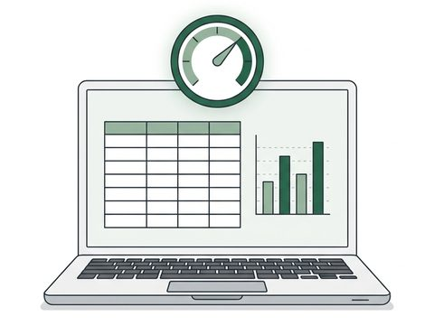
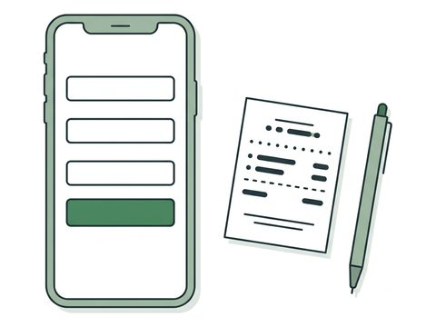
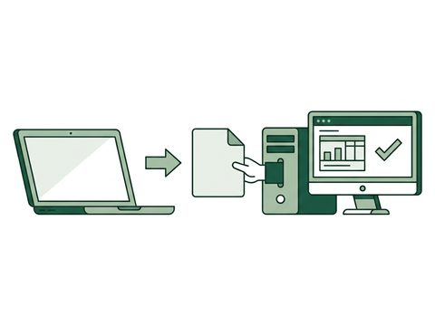
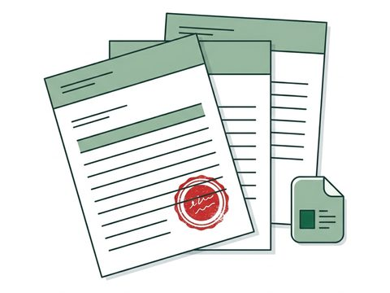
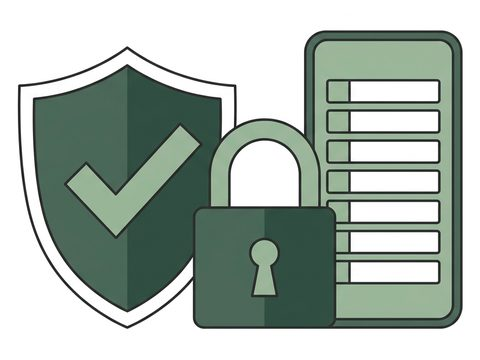

工事台帳・損益の一覧
どの工事が赤字か、開いた瞬間に分かります。経費は工事別・費目別に自動で集計され、受注額を入れれば損益と原価率が並びます。
経理・工事台帳システム（建設業向け）
見積もり・請求・領収→案件管理→経費管理→会計の流れをひとつに。
土木・建設会社の経理のために作り、本番で動いている仕組みです。この形を、御社の今までの運用にカスタマイズして作ります。
DEMO — 動いている画面
お客様の社名と画面は出せないので、同じシステムを、架空の会社「サンプル建設」とダミーデータで動かして撮りました。数字も社名も、すべて架空です。
4つの機能を、同じシステムで続けて操作しています。音声なし・約30秒
押すと、操作の様子を大きく見られます。
FIT — 合う会社
合うかどうかは、いまの工事台帳と入力の流れを伺って、一緒に確認します。
こんな会社に合います
まず整える範囲
読込は、社内の経理担当者でも会計事務所でも構いません。会計事務所が記帳している場合は、御社の了承を得て、阿部が会計事務所へ説明します。
BENEFITS — 導入後の変化
入力や転記に追われる時間を減らし、本来の仕事に戻れる状態をつくります。
BENEFIT 01
BENEFIT 02
BENEFIT 03
BENEFIT 04
HOW — 入力して、集計して、渡す
01 — 入力する
項目を選ぶと摘要の候補が並び、取引先の登録番号も見比べられます。現場からスマホで入力することもできます。社長・経理担当などの権限ごとに、できる操作を分けます。
経費入力（イメージ）
02 — 集計する
入力した経費は、工事別に費目ごとに集計されます。受注額を入れておけば、損益と原価率が画面に出て、動きのある工事が赤字・受注額未入力の印つきで並びます。月末にExcelで集計し直す作業がなくなります。
工事台帳（イメージ）
| 工事 | 費目 | 金額 |
|---|---|---|
| A邸 改修 | 材料費 | 128,400 |
| A邸 改修 | 外注費 | 260,000 |
| B社 設備 | 材料費 | 54,900 |
03 — 渡す
経理担当者か会計事務所が、ファイルを会計ソフトに読み込みます。同じ数字をもう一度入力する仕事がなくなります。科目・取引先コードは導入時に会計事務所と照合し、読込テストまで一緒に確認します。TKCをはじめ多様な会計ソフトの取込みファイル形式に合わせて設計可能です。
受け渡し（イメージ）
FEATURES — できること
御社専用にカスタマイズして、ストレスゼロへ。

工事台帳・損益の一覧
どの工事が赤字か、開いた瞬間に分かります。経費は工事別・費目別に自動で集計され、受注額を入れれば損益と原価率が並びます。

経費の入力（工事・一般）
現場からでも、スマホで入力できます。項目を選ぶと摘要の候補が並び、取引先の登録番号（インボイス）も見比べられます。

会計ソフト用ファイルの出力
会計側の二度入力が、なくなります。対象月の仕訳データを会計ソフトの取込形式で出力。科目・取引先コードは導入時に会計事務所と照合します。
現金出納帳
入力するのは、銀行からの引き出しだけ。現金払いの経費は自動で支払に入り、前月繰越と差引残高も自動計算です。

見積書・請求書・納品書・領収書
見積書を確定すると、請求書・納品書・領収書まで出せます。画面で入力して、実物と同じ体裁のPDFに。手書きの見積書が残る会社には、撮影するとAIが下書きを作り、合計を照合してから発行する流れも用意できます。

権限と操作記録
誰がいつ何を変えたか、全部残ります。社長・経理担当などの権限ごとに、できる操作を分けます。御社専用の環境に作るので、他社のデータと混ぜません。
複数税率（10%・8%）、印刷の体裁、作業人数の記録など、使いながら出た要望も反映しています。給与計算は含みません。
CASE — 建設会社での導入
設備・内装・建築などの工事を手がける建設会社。経理担当は1〜2名、会計ソフトはTKC FX2。導入前は、工事ごとの原価をExcelの工事台帳で管理し、経費を転記・集計したうえで、会計側でも仕訳を入力し直していました。導入にあたり、Excelの工事台帳と集計が一致し、会計事務所の読込テストを通過しています。
導入後の状態
進め方で工夫したこと
月300件 × 転記2分 ＝ 月10時間が、見直しの対象に。計算例です。御社の件数と流れを伺って、見直せる範囲をお伝えします。
社名・画面は、面談でお見せできる範囲でご説明します。
PRICE — 料金
実際に入力・閲覧する方の人数で、3つから選びます。毎月の費用には、サーバー費用、稼働の見守り、不具合の修正、操作の問い合わせ対応、バックアップが含まれます。
スタンダード
5名まで
毎月（税別）20,000円／月
税込 22,000円
初期導入費 300,000円（税別）
税込 330,000円
ミドル
10名まで
毎月（税別）40,000円／月
税込 44,000円
初期導入費 400,000円（税別）
税込 440,000円
プラス
20名まで
毎月（税別）80,000円／月
税込 88,000円
初期導入費 500,000円（税別）
税込 550,000円
毎月の費用に含むもの（導入後に続くこと）
初期導入費に含むもの
追加ユーザー：1名あたり2,000円／月（税別）／2,200円（税込）。データ容量は無制限。新機能や、制度・会計ソフトの変更に伴う改修は、ご相談のうえお見積りします。初期費用の分割はご相談ください。対応範囲・連絡方法・契約期間などの条件は、個別の契約で確認します。
PROCESS — 導入の流れ
資料を揃えてからでなくて大丈夫です。いまの工事台帳を1つお見せいただければ、始まります。期間は目安で、資料の準備・読込テスト・追加の要望で変わります。
FAQ — 安全・運用
データはどこに保管されますか？
クラウドに、御社専用の環境（会社ごとに別のデータベース）をつくって保管します。他社のデータとは混ぜません。通信は暗号化（HTTPS）で守られ、保管するデータもクラウド事業者の標準の機能で暗号化されます。
誰がデータを見られますか？
御社が登録した担当者だけです。ログインはメールアドレスとパスワードで、社長・経理担当などの権限ごとに、できる操作を分けます。誰がいつ何を変更したかは操作記録として残ります。阿部は、設定・保守・障害対応に必要な範囲でだけアクセスします。
外部のAIサービスに、データは送られますか？
標準の機能（経費入力・工事台帳・ファイル出力）は、入力したデータをAIサービスへ送りません。AIを使う機能（手書き見積の読み取りなど）を足す場合は、事前にご説明します。
どんなデータを預けますか？
経費・取引先・工事・受注額などの業務データです。領収書の画像や、給与の情報は預かりません。
会計ソフトは何でも対応できますか？
TKCのFX2は対応済みです。ほかの会計ソフトは、取込ファイルの形式に合わせて設計し、契約の前に取り込めることを確認します。
障害が起きたら、どうなりますか？
稼働の見守り（監視）と、原因の調査・復旧は、毎月の費用に含まれます。ご連絡は電子メール等で受け、原則3営業日以内に回答します。システム全体が止まる重大な障害は、気づいた後、すみやかに対応に着手します。
解約したら、データはどうなりますか？
データは御社のものです。契約が終わったあと30日以内に、CSVなど汎用の形式でお渡しし、そのあと当方が保有するデータを消去します（法令で保存が必要なものを除く）。
CONTACT — 30分の相談
工事台帳のExcelをお見せいただければ、その場で、置き換えられる範囲と費用・期間の目安をお伝えします。面談はオンライン（Google Meet）を基本に、ご希望があれば伺います。日程の候補は、こちらから3つお出しします。
合わないと判断した場合は、その場でそうお伝えします。売り込みの電話はしません。
お問い合わせ窓口：ライフ（阿部 龍也・群馬県）。設計・開発・運用を同じ人が担当します。